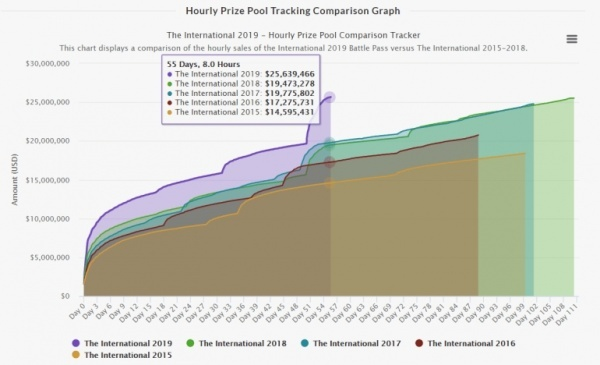
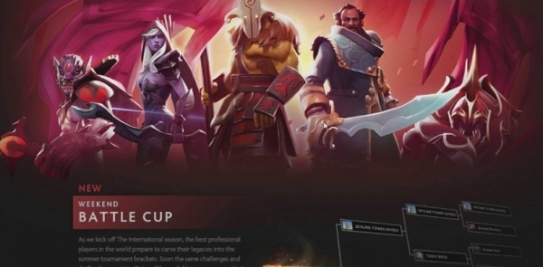

Apr 15, 2020 at 14:36
Due to the global coronavirus pandemic, the possibility of holding the main event of the year in the discipline - The International 2020 - is questionable. With a high degree of probability, the development company will be forced to postpone the championship, which means that the release of the traditional Battle Pass is also unlikely. In this article, we reflect on how an ideal compendium might look like, including all the best innovations since the first book.
For six years now, Valve's main tool in increasing the prize pool of The International has been the sale of an interactive compendium, which has been called the Battle Pass since 2016. With an initial cost of ten US dollars, a quarter of this amount goes to the treasury of the tournament, which initially amounts to 1.6 million US dollars. The dynamics of the prize pool growth only grows every year: in just a few hours, sales of last year's Battle Pass exceeded the total amount that developers received in 2013, and in order to beat the result of The International 2018, it took half as much time - 55 days.
The final prize fund amounted to more than thirty-four million US dollars, which is a record figure in the history of e-sports. Unfortunately, the quarantine, which is now the whole world, is unlikely to allow breaking the record this year, unless the developers find a way out of the situation. Given their love of earning money, this option still does not seem unbelievable. Nevertheless, while the release of the new Battle Pass remains a mystery, let us return to the times where it all began.
In 2013, Valve became the first gaming company to introduce a crowdfunding system to increase the prize pool of its tournament. Initially, seven goals were set, in the fulfillment of which all owners of the compendium received pre-prepared awards.
This is definitely not enough in today's Battle Pass. It was interesting to observe not only the growth of the prize pool of the competition, but also the probability of receiving a valuable trophy in the form of a mockery or an Immortal quality item. For example, to get a special set on Ax Ax without an ax from last year's Battle Pass, you had to spend a lot of your time or money, and maybe both. It is unlikely that the company will become poorer if, upon reaching the prize pool of thirty million dollars, it makes the lasso for Earthshaker Earthshaker a unique reward for all holders of a military pass, right? But this will noticeably fuel interest from the game community.
Another excellent feature of the compendium was the opportunity to replay the selected game from the qualifying cycle. In case of victory, the player earned points for the team that he chose as his favorite in a special section of the book. Each week, the most active fans received valuable rewards in the form of Mythical or Legendary quality items.
Compendiums coming out over the next few years did not carry anything new: the same sets of cursors, sets of emoticons, and interface styles. The exception was the reward for reaching the mark of fifteen million US dollars - a new item on the Ax Ax of Immortal quality for all owners of the combat pass and the release of a comic strip about the hero.
Alas, such an idea with the development of the universe of the game Valve put aside in the long box, if at all interested in it today. The only attempt the company made to attract a third-party audience to Dota 2 was the release of the card game Artifact, which, instead of expanding the MOBA universe, lost almost its entire audience in just six months. Nevertheless, it is important to try to develop the game not only in the direction of e-sports, but also in increasing the fan base. For Valve, it’s not a big deal to add the same comic strip about the character chosen by the owners of the Battle Pass, instead of another treasure chest.
Or, on the same principle, present to the community an animated series with the participation of the heroes of the game. The company definitely has the resources for this, it remains to find a desire. Especially when you have a serious competitor in the person of Riot Games.
One can endlessly argue that the number of subreddits is a dubious argument in favor of a competing discipline, and the threshold for entry for newcomers to Dota 2 is much higher; Valve still needs to think about how to learn how to competently work with the audience of his game. Perhaps a record prize pool then would not be the only reason for pride.
A really cool innovation in 2017 was a cooperative campaign called Likhoy Omut, which was divided into several acts. The story was divided into parts and zones, and for their passage the players could get from one to three stars, which allowed the owners of the combat pass to earn points for him. The ideal passage brought the treasury of Siltbreaker himself, in which there were ten more treasuries. The lucky ones could get five levels for the Battle Pass or find an extremely rare courier.
Another cool feature was the prestigious towers, which changed their appearance depending on the overall level of the team's military pass. A trifle, but nevertheless this added a little interest even before the start of the match itself.
The next year can be added to the asset of the developers, because all owners of the combat pass received a lot of interesting content. Crystal catacombs were added to the game, the passage of which not only brought variety to the players, but also made it possible to earn points and awards, and it is even possible to find the incredibly rare courier Jade Baby Roshan among the stone-ruined ruins.
An additional way to increase the level of your combat pass was the new regime of the Cave of the Wasteland. The fashion for royal battles was not spared and Dota 2. The essence of the campaign was that of the eight teams on the map you remain the last survivor. Participants, in parallel with the title task, could look for various items in the chests that brought extra points for their Battle Pass.
Fans just have fun in the game and are not spared. All owners of the combat pass could try their hand at the entertainment mutation mode. Every day, modifiers changed: from starting the game from the sixth level to the extraordinary strong effects of the runes.
A serious argument for buying a combat pass was an innovation that allowed players to choose the desired role before the start of the match. Due to the abundance of players in the first positions, of course, the search for games turned into a waiting simulator. Nevertheless, the owners of the Battle Pass could forget about the moments when several heroes were on the center line.
Over the past few years, the introduction of a unique regime, the Fury of Mo'orokai, has become familiar, but no less interesting. As in a regular game, the main goal of the team is to destroy the enemy fortress, only in this case a special creep comes to the rescue. If all the conditions are met, the participants had the opportunity to earn points and increase the level of their combat pass. A great opportunity to escape from the standard battles in public.
Fans of cosmetic items, the latest at the moment Battle Pass, gave a lot of interesting things. Upon reaching the 425 level of the military pass, the players received: new creep models, a prestigious item for Tiny Tiny, a new Invoker Invoker model, a lasso for Earthshaker Earthshaker and a special set for Ax Ax. A very cool set, given the fact that the next treasury with Immortal quality items is already pretty boring.
An excellent feature of the combat pass was the ability to avoid players with whom you were unpleasant to play. It is hardly possible to soberly evaluate the performance of this function even after a while, but its presence was a good reason to think about buying a combat pass. However, there were some significant drawbacks: the ability to reforge items from treasures to get two levels of compendium was removed. There was only one way to get unique rewards - to pay. Nevertheless, this did not in any way reduce the overall value of the combat pass.
The upcoming The International 2020 will be a jubilee, so for sure the development company will want to celebrate this event with a new set prize pool record. Therefore, there is no doubt that the combat pass will be filled with a huge number of various awards. One can only hope that this happens as soon as possible.

The final prize fund amounted to more than thirty-four million US dollars, which is a record figure in the history of e-sports. Unfortunately, the quarantine, which is now the whole world, is unlikely to allow breaking the record this year, unless the developers find a way out of the situation. Given their love of earning money, this option still does not seem unbelievable. Nevertheless, while the release of the new Battle Pass remains a mystery, let us return to the times where it all began.
The International 2014 Interactive Compendium
In 2013, Valve became the first gaming company to introduce a crowdfunding system to increase the prize pool of its tournament. Initially, seven goals were set, in the fulfillment of which all owners of the compendium received pre-prepared awards.
This is definitely not enough in today's Battle Pass. It was interesting to observe not only the growth of the prize pool of the competition, but also the probability of receiving a valuable trophy in the form of a mockery or an Immortal quality item. For example, to get a special set on Ax Ax without an ax from last year's Battle Pass, you had to spend a lot of your time or money, and maybe both. It is unlikely that the company will become poorer if, upon reaching the prize pool of thirty million dollars, it makes the lasso for Earthshaker Earthshaker a unique reward for all holders of a military pass, right? But this will noticeably fuel interest from the game community.
Another excellent feature of the compendium was the opportunity to replay the selected game from the qualifying cycle. In case of victory, the player earned points for the team that he chose as his favorite in a special section of the book. Each week, the most active fans received valuable rewards in the form of Mythical or Legendary quality items.
The International 2015 Interactive Compendium
Compendiums coming out over the next few years did not carry anything new: the same sets of cursors, sets of emoticons, and interface styles. The exception was the reward for reaching the mark of fifteen million US dollars - a new item on the Ax Ax of Immortal quality for all owners of the combat pass and the release of a comic strip about the hero.
Alas, such an idea with the development of the universe of the game Valve put aside in the long box, if at all interested in it today. The only attempt the company made to attract a third-party audience to Dota 2 was the release of the card game Artifact, which, instead of expanding the MOBA universe, lost almost its entire audience in just six months. Nevertheless, it is important to try to develop the game not only in the direction of e-sports, but also in increasing the fan base. For Valve, it’s not a big deal to add the same comic strip about the character chosen by the owners of the Battle Pass, instead of another treasure chest.
Or, on the same principle, present to the community an animated series with the participation of the heroes of the game. The company definitely has the resources for this, it remains to find a desire. Especially when you have a serious competitor in the person of Riot Games.
One can endlessly argue that the number of subreddits is a dubious argument in favor of a competing discipline, and the threshold for entry for newcomers to Dota 2 is much higher; Valve still needs to think about how to learn how to competently work with the audience of his game. Perhaps a record prize pool then would not be the only reason for pride.
The International 2016: Battle Pass
On March 22, the team left Romania Alivi 'w33' Omar and Rasmus 'MiSeRy' Philipsen. New Europe Secret players become
Canada Arthur 'Arteezy' Babaev and US Saahil 'Universe' Arora. But after this, a series of not very successful performances awaits the team: Europe Team Secret took 5-8th place on the Dota Pit League Season 4, 5-6th place on ESL One Manila 2016 and 7-8th place on EPICENTER 2016. It turned out to be even less successful for the team The Manila Major 2016.
In 2016, the development company introduced The International 2016: Battle Pass, which replaced the already familiar interactive compendium. Instead of common goals, a large number of tasks were introduced, allowing the owner of the combat pass to individually increase his level and receive rewards for this. Perhaps the main innovation was the Weekly Battle Cup, which allows teams to participate in impromptu tournaments. In addition to sports interest, each member of the team received fifteen levels for winning the final match, so it was really profitable to give all the best in games.

No less interesting feature of The International 2016: Battle Pass was the seasonal ranking selection of games. Thanks to this function, each owner of a combat pass could re-calibrate, the indicator of which remained in the player’s profile. With forty games played, the current rating could be replaced by that obtained at the end of the season.
The International 2017: Battle Pass
A really cool innovation in 2017 was a cooperative campaign called Likhoy Omut, which was divided into several acts. The story was divided into parts and zones, and for their passage the players could get from one to three stars, which allowed the owners of the combat pass to earn points for him. The ideal passage brought the treasury of Siltbreaker himself, in which there were ten more treasuries. The lucky ones could get five levels for the Battle Pass or find an extremely rare courier.
Another cool feature was the prestigious towers, which changed their appearance depending on the overall level of the team's military pass. A trifle, but nevertheless this added a little interest even before the start of the match itself.
The International 2018: Battle Pass
The next year can be added to the asset of the developers, because all owners of the combat pass received a lot of interesting content. Crystal catacombs were added to the game, the passage of which not only brought variety to the players, but also made it possible to earn points and awards, and it is even possible to find the incredibly rare courier Jade Baby Roshan among the stone-ruined ruins.
An additional way to increase the level of your combat pass was the new regime of the Cave of the Wasteland. The fashion for royal battles was not spared and Dota 2. The essence of the campaign was that of the eight teams on the map you remain the last survivor. Participants, in parallel with the title task, could look for various items in the chests that brought extra points for their Battle Pass.
Fans just have fun in the game and are not spared. All owners of the combat pass could try their hand at the entertainment mutation mode. Every day, modifiers changed: from starting the game from the sixth level to the extraordinary strong effects of the runes.
A serious argument for buying a combat pass was an innovation that allowed players to choose the desired role before the start of the match. Due to the abundance of players in the first positions, of course, the search for games turned into a waiting simulator. Nevertheless, the owners of the Battle Pass could forget about the moments when several heroes were on the center line.
The International 2019: Battle Pass
Over the past few years, the introduction of a unique regime, the Fury of Mo'orokai, has become familiar, but no less interesting. As in a regular game, the main goal of the team is to destroy the enemy fortress, only in this case a special creep comes to the rescue. If all the conditions are met, the participants had the opportunity to earn points and increase the level of their combat pass. A great opportunity to escape from the standard battles in public.
Fans of cosmetic items, the latest at the moment Battle Pass, gave a lot of interesting things. Upon reaching the 425 level of the military pass, the players received: new creep models, a prestigious item for Tiny Tiny, a new Invoker Invoker model, a lasso for Earthshaker Earthshaker and a special set for Ax Ax. A very cool set, given the fact that the next treasury with Immortal quality items is already pretty boring.
An excellent feature of the combat pass was the ability to avoid players with whom you were unpleasant to play. It is hardly possible to soberly evaluate the performance of this function even after a while, but its presence was a good reason to think about buying a combat pass. However, there were some significant drawbacks: the ability to reforge items from treasures to get two levels of compendium was removed. There was only one way to get unique rewards - to pay. Nevertheless, this did not in any way reduce the overall value of the combat pass.
The upcoming The International 2020 will be a jubilee, so for sure the development company will want to celebrate this event with a new set prize pool record. Therefore, there is no doubt that the combat pass will be filled with a huge number of various awards. One can only hope that this happens as soon as possible.